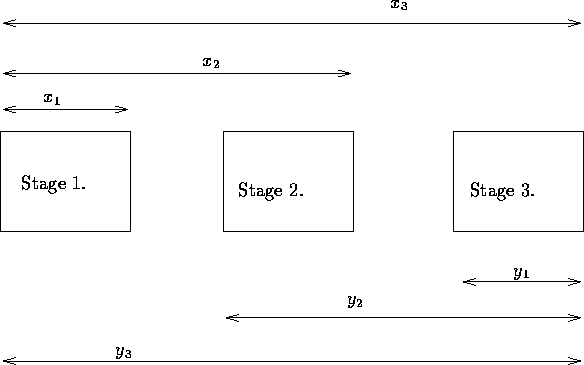

Let's begin with a simple capital budgeting problem. A corporation has $5 million to allocate to its three plants for possible expansion. Each plant has submitted a number of proposals on how it intends to spend the money. Each proposal gives the cost of the expansion (c) and the total revenue expected (r). The following table gives the proposals generated:
Table 1: Investment Possibilities
Each plant will only be permitted to enact one of its proposals. The goal is to maximize the firm's revenues resulting from the allocation of the $5 million. We will assume that any of the $5 million we don't spend is lost (you can work out how a more reasonable assumption will change the problem as an exercise).
A straightforward way to solve this is to try all possibilities and choose the best. In this case, there are only ways of allocating the money. Many of these are infeasible (for instance, proposals 3, 4, and 1 for the three plants costs $6 million). Other proposals are feasible, but very poor (like proposals 1, 1, and 2, which is feasible but returns only $4 million).
Here are some disadvantages of total enumeration:
Note also that this problem cannot be formulated as a linear program, for the revenues returned are not linear functions.
One method of calculating the solution is as follows:
Let's break the problem into three stages: each stage represents the money allocated to a single plant. So stage 1 represents the money allocated to plant 1, stage 2 the money to plant 2, and stage 3 the money to plant 3. We will artificially place an ordering on the stages, saying that we will first allocate to plant 1, then plant 2, then plant 3.
Each stage is divided into states. A state encompasses the information required to go from one stage to the next. In this case the states for stages 1, 2, and 3 are
Unlike linear programming, the do not represent decision variables: they are simply representations of a generic state in the stage.
Associated with each state is a revenue. Note that to make a decision at stage 3, it is only necessary to know how much was spent on plants 1 and 2, not how it was spent. Also notice that we will want to be 5.
Let's try to figure out the revenues associated with each state. The only easy possibility is in stage 1, the states . Table 2 gives the revenue associated with .
Table 2: Stage 1 computations.
We are now ready to tackle the computations for stage 2. In this case, we want to find the best solution for both plants 1 and 2. If we want to calculate the best revenue for a given , we simply go through all the plant 2 proposals, allocate the given amount of funds to plant 2, and use the above table to see how plant 1 will spend the remainder.
For instance, suppose we want to determine the best allocation for state . In stage 2 we can do one of the following proposals:
Table 3: Stage 2 computations.
We can now go on to stage 3. The only value we are interested in is . Once again, we go through all the proposals for this stage, determine the amount of money remaining and use Table 3 to decide the value for the previous stages. So here we can do the following at plant 3:
If you study this procedure, you will find that the calculations are done recursively. Stage 2 calculations are based on stage 1, stage 3 only on stage 2. Indeed, given you are at a state, all future decisions are made independent of how you got to the state. This is the principle of optimality and all of dynamic programming rests on this assumption.
We can sum up these calculations in the following formulas:
Denote by the revenue for proposal at stage j, and byAll we were doing with the above calculations was determining these functions.the corresponding cost. Let be the revenue of state in stage j. Then we have the following calculations
and
The computations were carried out in a forward procedure. It was also possible to calculate things from the ``last'' stage back to the first stage. We could define

Figure 1: Forward vs. Backward Recursion
Corresponding formulas are:
and
If you carry out the calculations, you will come up with the same answer.
You may wonder why I have introduced backward recursion, particularly since the forward recursion seems more natural. In this particular case, the ordering of the stages made no difference. In other cases, though, there may be computational advantages of choosing one over another. In general, the backward recursion has been found to be more effective in most applications. Therefore, in the future, I will be presenting only the backward recursion, except in cases where I wish to contrast the two recursions.